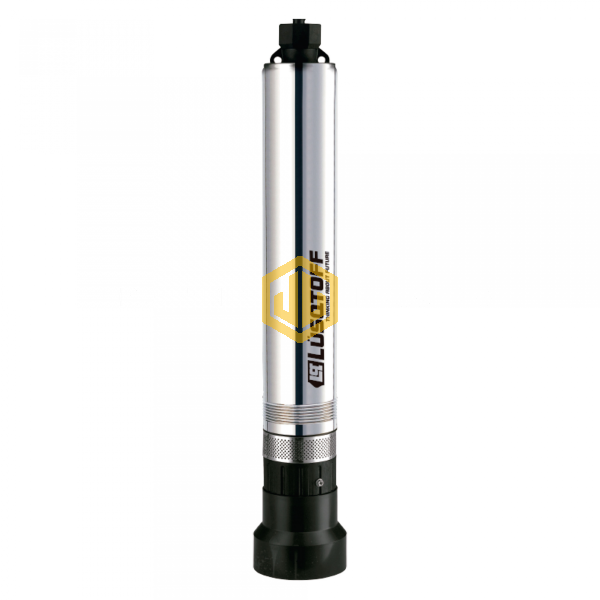
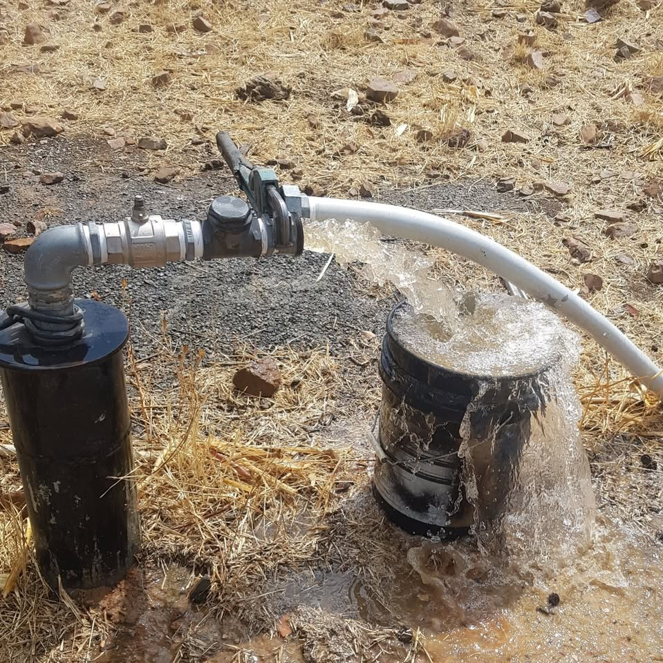

Perforación de Pozos
Realizamos perforaciones de pozos de agua utilizando maquinaria especializada para garantizar un suministro de agua confiable y eficiente.
Realizamos perforaciones de pozos de agua utilizando maquinaria especializada para garantizar un suministro de agua confiable y eficiente.

Ofrecemos instalación de bombas de agua para asegurar un suministro constante y eficiente en tu hogar o negocio.

Ofrecemos servicios de mantenimiento y reparación de pozos de agua para garantizar su correcto funcionamiento y prolongar su vida útil.
Contactanos y te asesoramos sin compromiso.
Contáctanos